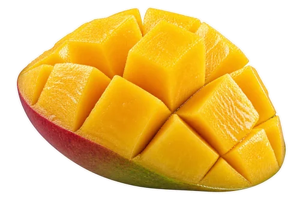
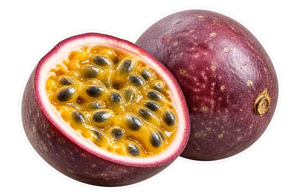

What you will need
Yield: 2 small glasses (about 2 cups). Final volume changes with fruit, straining, and liquid adjustments.

1½ cups ripe mango cubes (about 210 g), fresh or frozen
3 tablespoons unsweetened seedless passion fruit pulp (45 ml)- ½ cup plain yogurt (about 120 g)
- ½ cup cold water (120 ml), plus more as needed
- Optional: 1 teaspoon honey or maple syrup, to taste
How to make it
Prepare peeled mango flesh, removing the stone before cutting into cubes. If using frozen mango, check that the pieces suit your blender and follow the machine’s frozen-fruit guidance.
For fresh passion fruit, scoop the pulp into a fine sieve over a bowl. Gently stir and press the juicy pulp through, leaving the hard seeds behind. Measure 3 tablespoons of the strained pulp.
Put water and yogurt in the blender, then add mango and passion fruit pulp. Blend until smooth, stopping before scraping or redistributing the ingredients.
Taste the smoothie. Add water a tablespoon at a time for a lighter drink, or the optional small amount of sweetener if the passion fruit is too tart for your preference. Blend briefly to combine.
Divide between two small glasses and serve. If you want visible passion fruit seeds as a garnish, keep that separate from the seedless base and use only if you enjoy their texture.
Let mango be the main fruit
The recipe gives mango the larger share of the fruit so the passion fruit can act as a bright accent. Ripe fresh mango and unsweetened frozen mango both work as starting ingredients. Remove the peel and stone before measuring fresh fruit. If your cubes taste tart or fibrous on their own, expect the smoothie to need a different balance from one made with soft sweet mango. Taste the prepared mango first and keep the passion fruit to the written amount on your first batch.
Passion fruit pulp is different from a bottled drink
Choose unsweetened pulp rather than a ready-to-drink passion fruit beverage when following the measured recipe. Goya, for example, lists its frozen passion fruit pulp as having no sugar added, but you should read the label on the particular product you buy. A nectar or cocktail can include other ingredients and a different dilution, making it a different recipe adjustment. The source link below helps explain the product form; it is not a requirement to use that brand. Plain pulp keeps the amount of fruit and optional sweetener easier to control.
Fresh passion fruit needs a seed decision
For the smooth base on this page, strain the fresh pulp before measuring it. Scoop it into a fine sieve, stir with a spoon, and press gently until the juice and soft pulp collect below. Stop short of crushing hard seeds through the mesh. The number of fruits needed to make 3 tablespoons depends on their size and contents, so measure the strained result rather than promising a fixed fruit count. If you prefer a seed-speckled smoothie, try a small amount separately; the texture will differ from the recipe photograph.
Handle frozen pulp without guessing a packet fraction
Frozen pulp packets vary in size. Follow the package’s thawing guidance, or portion the amount in a way your blender can process safely. Measure the recipe’s 3 tablespoons rather than assuming that half a packet is correct. If the pulp has thawed for measuring, keep it chilled and return unused portions to storage according to the package directions. Treat a frozen slab differently from a spoonful of soft pulp: a machine that blends cubes may not be designed to break up a large solid block.
Choose your creamy ingredient
The original blend uses ½ cup plain yogurt. A thicker yogurt can make a richer texture; a thinner product may need less added water. For a dairy-free trial, use plain plant-based yogurt and begin with ¼ cup water, adding more as needed. Coconut yogurt contributes its own flavor, while other products may be milder. Read the label for allergens and sweeteners before choosing. The substitution is a flavor and texture option, not a claim that every alternative contains the same protein or other nutrients as the dairy version.
Adjust tartness in a small sample
Passion fruit can dominate quickly, so taste the first blend before adding extra pulp. If it is too tart, try blending in additional mango cubes or a spoonful of yogurt. If you like the intensity but want a little sweetness, add the optional teaspoon and taste again. If the drink seems too mango-heavy, add another teaspoon of passion fruit pulp to a sample portion before changing the whole batch. This approach makes it easier to discover your preferred balance without using up the remaining fruit on an adjustment you dislike.
Control temperature without a large scoop of ice
Frozen mango gives you a chilled, thicker starting point. With fresh mango, use chilled fruit, yogurt, and water if you want a cold smoothie without much ice. If you choose to add ice, make sure your machine can process it and start with a few cubes. Extra ice contributes water as it melts, so it can soften the fruit flavor. This recipe does not require ice because the mango and yogurt already provide the base texture. Choose the temperature and thickness together, rather than treating ice as the solution to every blending problem.
Make one small serving or a larger batch
For one small serving, use ¾ cup mango, 1½ tablespoons passion fruit pulp, ¼ cup yogurt, and ¼ cup water. For four small glasses, double the original amounts: 3 cups mango, 6 tablespoons pulp, 1 cup yogurt, and 1 cup water. Check blender capacity and consider two batches instead of one very full container. Keep the starting fruit ratio the same while adjusting liquid separately. Approximate yield depends on how much water you add and how much air your blender incorporates, so glasses may not fill to identical levels each time.
A useful troubleshooting sequence
If the blender struggles, first stop it and check the arrangement of the ingredients. Add a tablespoon of water if the mixture needs more movement, then blend again within the machine’s instructions. If the texture is gritty because seeds were included, the easiest correction is to strain the passion fruit before the next batch rather than repeatedly blending the seeds. If the flavor is flat, taste the mango and pulp separately to identify which part needs attention. If it is pleasant already, stop adjusting; more ingredients can obscure the two-fruit combination you started with.
Use the leftover fruit with a plan
Keep the remaining mango and passion fruit portions separate so they can be used in different amounts next time. Mango can also go into a simpler yogurt smoothie, while a small spoonful of passion fruit can be tried as an optional topping for a portion of plain yogurt. Follow the storage directions for purchased frozen pulp and ordinary safe handling for fresh cut fruit. Label any prepared portions you save. Keeping the fruit components separate gives you more flexibility than turning all the leftovers into another large finished pitcher.
Serving and keeping a portion
Prepare a small batch close to serving for the texture and temperature you enjoy. If saving some, cover and refrigerate promptly. Stir before serving and use any opened packaged ingredients according to their labels. Citrus and ginger do not make a homemade drink shelf-stable. Keep utensils and containers clean and handle cut produce and dairy or plant-based ingredients with care.
FoodSafety.gov recommends refrigerating perishable food within two hours, or one hour above 90°F, and keeping the refrigerator at 40°F or below.
Questions before you begin
Is this smoothie banana-free?
Yes. Mango and yogurt supply the fruit base and creaminess; banana is not in the measured recipe.
Can I blend the passion fruit seeds?
The recipe uses strained, seedless pulp. Including seeds is a separate texture choice, and you should follow your blender’s instructions rather than assuming it will make them disappear.
Can I use mango nectar instead of cubes?
That changes the liquid and fruit balance. Use prepared mango flesh or unsweetened frozen cubes for the measured version, then treat nectar as a separate experiment.
Preparation sources and recipe standards
These sources support specific ingredient forms and preparation choices. They do not establish kitchen testing of this recipe or health effects of the finished drink.
We use AI-generated photography-style images and ingredient cutouts. Actual appearance varies with ingredients and preparation. We do not describe this recipe as kitchen-tested. Read our recipe standards, and share a specific correction if a quantity or preparation step needs attention.